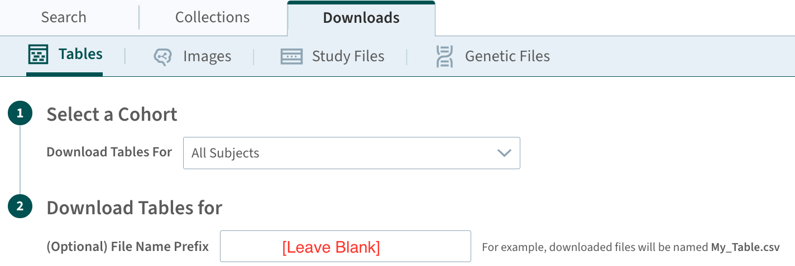

ADNIMERGE2-Package-Building
Last Updated: July 25, 2025
Source:vignettes/ADNIMERGE2-Package-Building.Rmd
ADNIMERGE2-Package-Building.RmdIntroduction
The document describes the procedure to build an R data package from
source .csv files with similar workflow of
ADNIMERGE2 package.
Building an R Package from csv files
Create R Package Project
Clone the https://github.com/atri-biostats/ADNIMERGE2 repository. This will create the following directories:
-
data-raw: to store raw-data -
R: to store package-specific defined function that includes utils function -
man: to store roxygen2 documentation of functions/data in the package -
vignettes: to store guidance documents/articles about the package if necessary -
tests: to store package related test and retest scripts and will be checked during package building -
inst: to store any files that will not be exported to the package, and that will be stored as system file including any external data that is not in R data format (i.e.,.rda/.Rdata) -
tools: to store auxiliary files that needed during package configuration
Or create an R package project locally, which can be created using usethis::create_package function, and add package-specific metadata into the local package directory, please refer to https://r-pkgs.org/description.html for more information. Once the package-specific metadata is created , copy the pre-defined scripts/functions as necessary from the ADNIMERGE2 github repository with the same file path to your local package project directory.
Download the ADNI Study Data
Download the ADNI study data from the data-shared platform at https://adni.loni.usc.edu/data-samples/adni-data/
either in *.zip or *.csv file format, and
store the files in ./data-raw
directory
Required to download a data dictionary
*.csvfileIt is recommended to download files from the data-sharing platform on the same date. If the data is download from
Analysis Ready Cohort (ARC) Build, it is recommended to download the file without adding any prefix to the file name as highlighted in the following figure.

Build Package
The next step is start building the package by sourcing ./tools/build.R
script file. The ./tools/build.R`
script file is used to prepare dataset, generate documentations and
finalize package building. The main procedures in this script are
presented as follows:
-
Data preparation:
-
To store all dataset in
./datadirectory usingusethis::use_data()Some additional data preparation, please see here for more information.
Required to specify two input arguments: the data downloaded date (
DATA_DOWNLOADED_DATE) inYYYY-MM-DDformat and indicator of whether to update any existing data dictionary file (UPDATE_DATADIC)
-
./data-raw/data-prep-recode.R:To map numerically coded values of a dataset based on existing data dictionary as necessary
Required to specify indicator argument regarding whether to use the updated data dictionary (
USE_UPDATED_DATADIC) if the data dictionary is updated in previous step
-
./tools/generate-derived-data.R:To generate some derived dataset based on the files in the
vignettesdirectoryRequired to specify the name of derived dataset (
DERIVED_DATASET_LIST) as an input argument
-
-
Generate data-related documentations:
To create roxygen2 documentation for the available datasets in the
./datadirectory.-
To generate documentations for both the raw data and the derived data based on the actual data values, and data dictionary
Required two input arguments: indicator of whether to use the updated data dictionary (
USE_UPDATED_DATADIC) if it is existed, and name of derived dataset list (DERIVED_DATASET_LIST).
Build the data package: using devtools R package